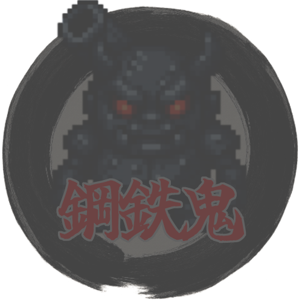

ロード中...
🔊 最初のクリックでBGMが開始されます

討伐済み
討伐済み
討伐済み
討伐済み
討伐済み
アンロック済み
操作説明
×
←
1
/
1
→
スコア
:
0
残弾数
:
10
残り時間
:
05:00
ミニマップ
操作
WASD : 移動
左クリック : 攻撃
L : ステータス割り振り
P : ポーズ
桃太郎Lv
:
1
Exp
:
0
/
10
回復アイテム
0
Spaceで使用
ボス鬼出現！！
ステータス割り振り
残りポイント
0
攻撃力
－
0
＋
移動速度
－
0
＋
リロード速度
－
0
＋
決定
キャンセル
※「L」キーでこの画面を開閉できます
ポーズ
ゲームオーバー
開発者ツール
×
鬼の設定
出現頻度 (フレーム):
最大敵数:
赤鬼HP:
青鬼HP:
黒鬼HP:
鬼の基本速度:
ボス出現時間 (秒):
ボス攻略時間 (秒):
プレイヤーの設定
プレイヤーHP:
プレイヤー速度:
最大弾数:
弾回復時間 (秒):
当たり判定表示
プレイヤー当たり判定を表示
敵当たり判定を表示
ボス衝突判定を表示
ボス怒りモード状態を表示
弾当たり判定を表示
攻撃範囲を表示
高速移動設定
高速移動判定閾値:
サブフレーム最大ステップ:
線分交差判定:
ボス設定
ボス鬼1弾速度:
ボス鬼1弾ダメージ:
ボス鬼をすぐ出現
回復アイテム設定
回復アイテムドロップ率(%):
回復アイテム回復率(%):
当たり判定詳細
当たり判定デバッグ情報を表示
プレイヤー当たり判定サイズ:
ボス進捗管理
全ボス進捗リセット
全ボスアンロック
個別ボス進捗リセット:
砲鬼リセット
バイク鬼リセット
ワープ鬼リセット
風神・雷神リセット
個別ボス討伐状況変更:
鋼鉄鬼:
未討伐
暴走鬼:
未討伐
妖術鬼:
未討伐
風神・雷神:
未討伐
ラスボス:
未討伐
ラストステージ:
未討伐
ボス進捗状況:
設定を適用
設定をリセット